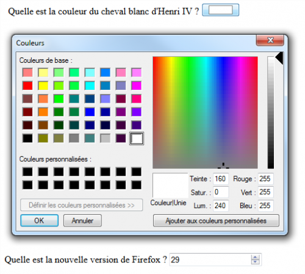
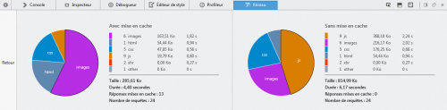
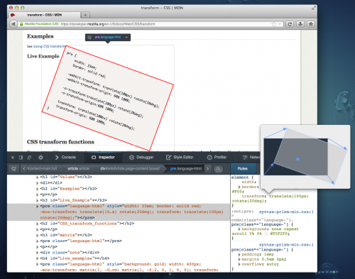

29 avril 2014
Sortie de Firefox 29 « Australis »
Mozilla viens de sortir Firefox 29 avec sa nouvelle interface utilisateur dénommée « Australis ».
Je ne vais pas m'étendre à ce sujet car il y a déjà plusieurs articles expliquant bien le changement d'interface.
- Cette version 29 embarque enfin l'API Gamepad, qui permet notamment d'utiliser une manette de jeu en natif dans une page web, pratique pour les jeux ainsi que les interfaces pour TV ;
- Les développeurs vont aussi pouvoir utiliser les nouveaux types pour la balise input color et number :

- La console web a été améliorée et est accessible aux Web Workers via l'API console ;
- Le moniteur réseau des outils de développement affiche de jolis camemberts de statistiques :

- L'inspecteur affiche une prévisualisation des transformations CSS en info-bulle :

- Auto-complétion des propriétés et valeurs dans l'éditeur de style.


Commentaires 3